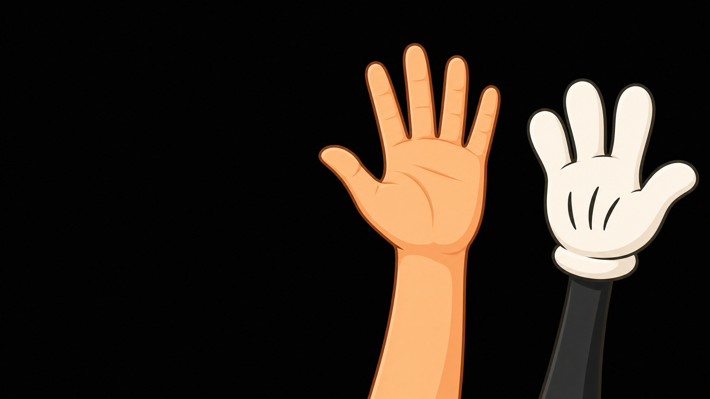
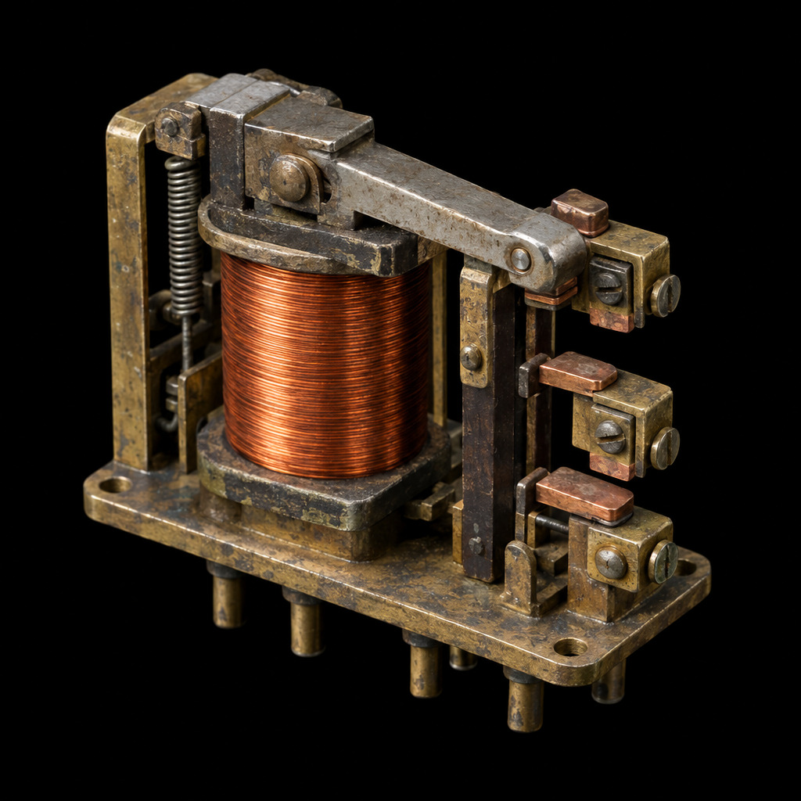
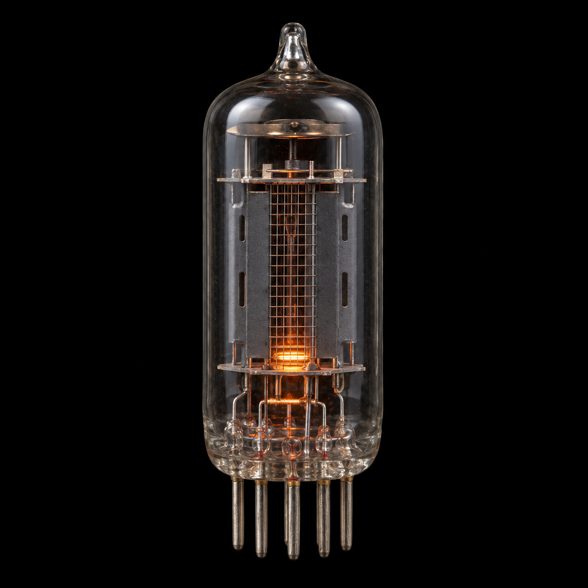
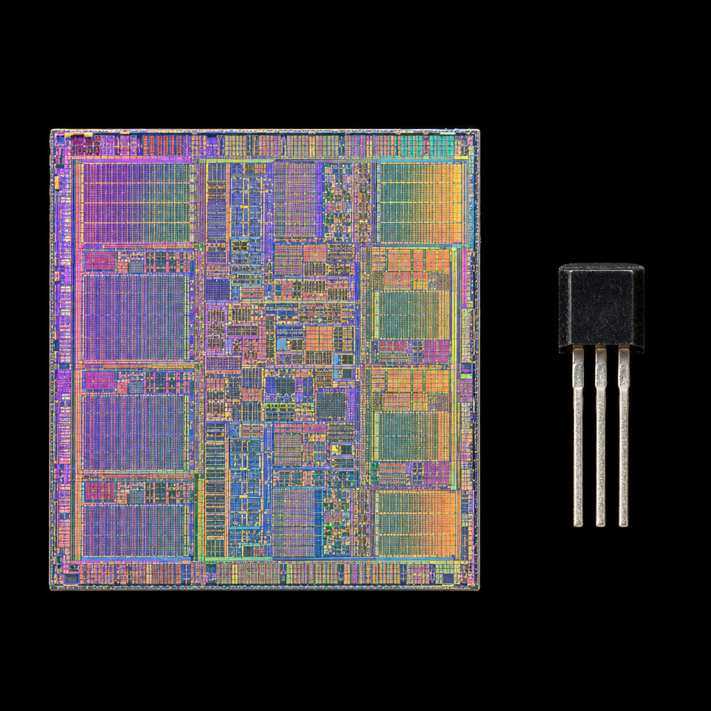
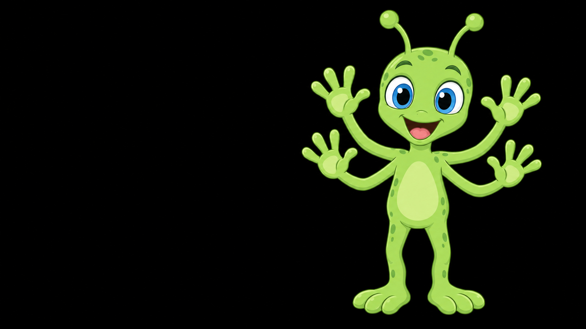

the byte switchboard: hands-on-computer-science.de/cs/en/items/byte-switchboard
which switch changes the number the most?
how do you set 255, and how do you set 1?
what happens when you count one step past 255?




